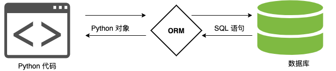
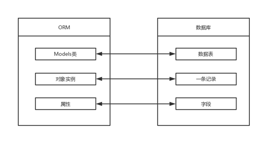
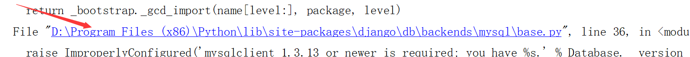
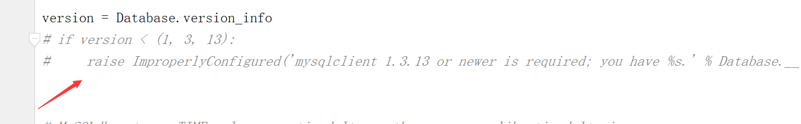
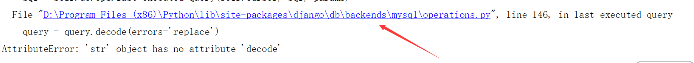
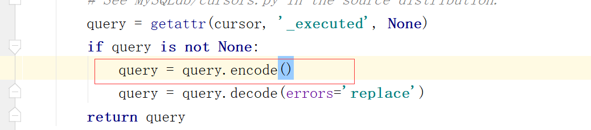
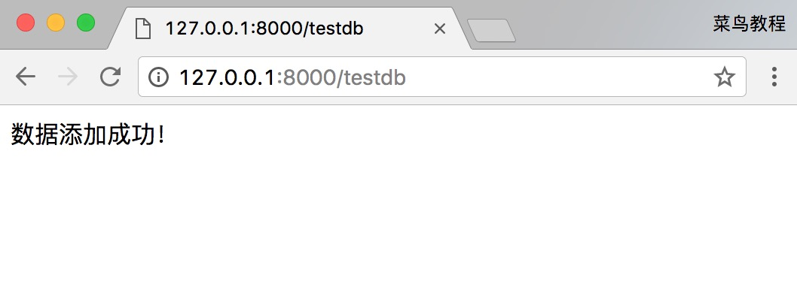

Django モデル
Django は、PostgreSQL、MySQL、SQLite、Oracle など、さまざまなデータベースを優れた形でサポートしています。
Django はこれらのデータベースに対して統一された呼び出し API を提供しています。 自分のビジネスニーズに応じて異なるデータベースを選択できます。
MySQL は Web アプリケーションで最もよく使われるデータベースです。この章では MySQL を例として紹介します。当サイトのMySQL チュートリアルMySQL の基礎知識をさらに学ぶことができます。
mysql ドライバをインストールしていない場合は、次のコマンドを実行してインストールできます：
sudo pip3 install pymysql
Django ORM
Django のモデルは内蔵の ORM を使用します。
オブジェクト関係マッピング（Object Relational Mapping、略称 ORM）は、オブジェクト指向プログラミング言語における異なる型システム間のデータ変換を実現するために使用されます。
ORM はビジネスロジック層とデータベース層の間で橋渡しの役割を果たします。
ORM は、オブジェクトとデータベース間のマッピングを記述するメタデータを使用して、プログラム内のオブジェクトを自動的にデータベースに永続化します。

ORM を使用する利点：
- 開発効率が向上します。
- 異なるデータベースへスムーズに切り替えられます。
ORM を使用する欠点：
- ORM コードを SQL 文に変換する際に一定の時間がかかるため、実行効率が低下することがあります。
- 長期間 ORM コードを書いていると、SQL 文を作成する能力が低下します。
ORM の解析プロセス：
- 1. ORM は Python コードを SQL 文に変換します。
- 2. SQL 文は pymysql を介してデータベースサーバーに送信されます。
- 3. データベースで SQL 文を実行し、結果を返します。
ORM の対応関係表：

データベース設定
Django で mysql データベースを使用する方法
MySQL データベースの作成（ORM はデータベースレベルでは操作できず、データテーブルレベルでのみ操作できます）構文：
create database 数据库名称 default charset=utf8; # 防止编码问题，指定为 utf8
例えば、runoob という名前のデータベースを作成し、エンコーディングを utf8 に指定します：
create database runoob default charset=utf8;
プロジェクトの settings.py ファイルで DATABASES 設定項目を見つけ、その情報を次のように変更します：
HelloWorld/HelloWorld/settings.py: ファイルコード：
Python2.x を使用している場合は、ここに中国語のコメントが追加されています。そのため、HelloWorld/settings.py ファイルの先頭に次を追加する必要があります。# -*- coding: UTF-8 -*-。
上記にはデータベース名とユーザーの情報が含まれており、これらは MySQL の対応するデータベースとユーザーの設定と同じです。Django はこの設定に基づいて、MySQL 内の該当するデータベースとユーザーに接続します。
次に、Django に pymysql モジュールを使用して mysql データベースに接続するよう指示します：
インスタンス
import pymysql
pymysql.install_as_MySQLdb()
モデルの定義
APP を作成
Django では、モデルを使用するには app を作成する必要があります。次のコマンドで TestModel という app を作成します：
django-admin startapp TestModel
ディレクトリ構造は次のとおりです：
HelloWorld |-- HelloWorld |-- manage.py ... |-- TestModel | |-- __init__.py | |-- admin.py | |-- models.py | |-- tests.py | `-- views.py
TestModel/models.py ファイルを次のように変更します：
HelloWorld/TestModel/models.py: ファイルコード：
上記のクラス名はデータベースのテーブル名を表し、models.Model を継承しています。クラス内のフィールドはデータテーブル内のフィールド（name）を表し、データ型は CharField（varchar に相当）、DateField（datetime に相当）で、max_length パラメータは長さを制限します。
次に settings.py で INSTALLED_APPS 項目を次のように見つけます：
INSTALLED_APPS = (
'django.contrib.admin',
'django.contrib.auth',
'django.contrib.contenttypes',
'django.contrib.sessions',
'django.contrib.messages',
'django.contrib.staticfiles',
'TestModel', # 添加此项
)
コマンドラインで実行します：
$ python3 manage.py migrate # 创建表结构 $ python3 manage.py makemigrations TestModel # 让 Django 知道我们在我们的模型有一些变更 $ python3 manage.py migrate TestModel # 创建表结构
"Creating table…" という文字が数行表示されれば、データテーブルの作成は完了です。
Creating tables ... …… Creating table TestModel_test #我们自定义的表 ……
テーブル名の構成は、アプリケーション名_クラス名（例：TestModel_test）です。
注意：models でテーブルに主キーを設定していなくても、Django は自動的に id を主キーとして追加します。
よくあるエラーメッセージ
上記のコマンドを実行すると、次のようなエラーメッセージが表示される場合があります：

原因は、MySQLclient が現在 Python3.4 までしかサポートしていないため、より高いバージョンの Python を使用している場合は、次のように修正する必要があります：
エラーメッセージのファイルパスから ...site-packages\Django-2.0-py3.6.egg\django\db\backends\mysql パスの base.py ファイルを見つけ、この 2 行のコードをコメントアウトします（コードはファイルの先頭部分にあります）：
if version < (1, 3, 13):
raise ImproperlyConfigured('mysqlclient 1.3.13 or newer is required; you have %s.' % Database.__version__)

通常、エラーのコードファイルパス情報をクリックすると、エラーファイルの該当行に自動的にジャンプします。その時、エラーが発生しているコード行をコメントアウトします。
次のようなエラーメッセージが表示される場合：

エラーのコードファイルパスをクリックして、エラーファイルの該当行にジャンプし、エラーが発生しているコード行の前に次を追加します：
query = query.encode()

データベース操作
次に、HelloWorld ディレクトリに testdb.py ファイルを追加し（後述）、urls.py を変更します：
HelloWorld/HelloWorld/urls.py: ファイルコード：
データの追加
データを追加するには、まずオブジェクトを作成し、次に save 関数を実行する必要があります。これは SQL の INSERT に相当します：
HelloWorld/HelloWorld/testdb.py: ファイルコード：
アクセスhttp://127.0.0.1:8000/testdbデータ追加成功のメッセージが表示されます。
出力結果は次のとおりです：

データの取得
Django はデータベースの内容を取得するための複数の方法を提供しています。次のコードのとおりです：
HelloWorld/HelloWorld/testdb.py: ファイルコード：
データの更新
データの変更には save() または update() を使用できます：
HelloWorld/HelloWorld/testdb.py: ファイルコード：
データの削除
データベース内のオブジェクトを削除するには、そのオブジェクトのdelete()メソッドを呼び出すだけです：
gmax
659***604@qq.com
参考URL
mysqlclient がどうしてもインストールできない場合は、リンクライブラリを変えましょう：
ENGINE 設定を変更：
DATABASES = { 'default': { 'ENGINE': 'mysql.connector.django', # 链接配置换成这个 'NAME': 'test', 'USER': 'test', 'PASSWORD': 'test123', 'HOST':'localhost', 'PORT':'3306', } }まだ落とし穴にハマっている初心者に敬意を！
gmax
659***604@qq.com
参考URL
白虹李李
its***dtobebad@263.net
Windows で mysqlclient をインストールするとき、多くの場合エラーが発生します。ある人はこのサイトに行くことで：
https://www.lfd.uci.edu/~gohlke/pythonlibs/#mysqlclient
対応するオペレーティングシステムのものを直接ダウンロードしてwhlインストールして問題を解決しました：
ダウンロードやインストールさえ面倒な場合は、現在 1.3.12（現時点の最新版は 1.3.13）をインストールできます：
白虹李李
its***dtobebad@263.net
mafx
ma_***gxin@163.com
問題：Djangoを使用してデータベースMySql8.0.13に接続するとエラーが発生する
原因：おそらく新しいバージョン8.0の新しい暗号化方式による問題です。
解決：ALTER USER 'test'@'%' IDENTIFIED WITH mysql_native_password BY 'test';データベースパスワードの暗号化方式を変更する
mafx
ma_***gxin@163.com
hmildd
hmi***@163.com
上記の文を実行すると、次のようなエラーが発生しました：
解決方法：python ディレクトリ配下の Lib\site-packages\django\db\backends\mysql\base.py を見つけ、'DateTimeField': 'datetime(6)' を見つけて、datetime(6) を datetime に変更すれば、問題が解決します。
もう一つの解決方法：MySQL をアップグレードします。Django2.1 は MySQL5.6 以下のバージョンをサポートしていないため、MySQL を5.6以上にアップグレードすればよいです。
hmildd
hmi***@163.com
刘罗锅上山
125***9341@qq.com
参考URL
実行python manage.py migrateするとエラーが発生しました：
よく読むと、ローカルに mysql をインストールする必要があることがわかりました。それから公式サイトでダウンロードし、mysql のチュートリアルに従ってインストールします。現在は 8.0.17 バージョンになっており、チュートリアルのインストール手順が変わっています。いろいろ検索したところ、これが使えることがわかりました：mysql8 のエラーを解決：ERROR 1410 (42000): You are not allowed to create a user with GRANT。設定が成功したら、新しいデータベースを作成するのを忘れないでください。その後、そのコマンドを実行すればOKです。
刘罗锅上山
125***9341@qq.com
参考URL